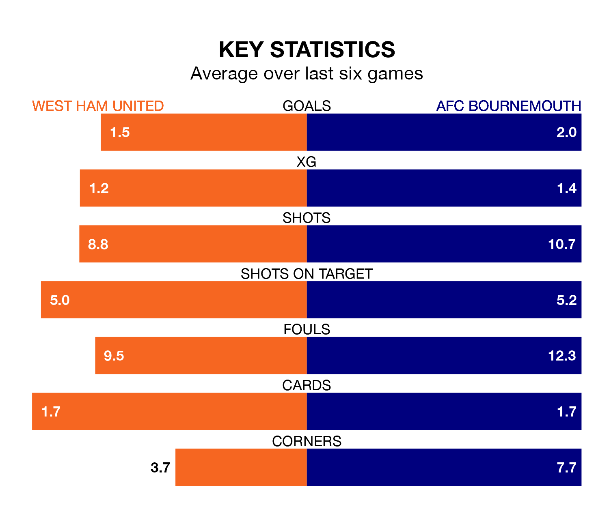

West Ham United face AFC Bournemouth on Thursday seeking to protect their long unbeaten run in the Premier League.
The Hammers are unbeaten in five, with three wins and two draws, ahead of the 7.30pm kick-off.
They face a Bournemouth team who have won three and lost two over the same number of games.
In the last 10 years, West Ham and Bournemouth have played each other on 13 occasions. West Ham won five of them, Bournemouth four, and they drew four times.
On average, the Hammers scored 2.1 goals and the Cherries 1.5 in those matches.
Their last meeting was on August 12, when they played out a 1-1 draw.
In Dominic Solanke, Bournemouth have one of the league's most on-form strikers so far this season. He has notched 12 goals in 20 appearances, to sit third in the scoring charts.
His goal rate of one every 148 minutes is quicker than that of Jarrod Bowen, West Ham's top scorer with a goal every 163 minutes, and a total of 11 goals in 20 games.
With 28 goals in 20 games so far this season, the Cherries are scoring at below the league average rate with 1.4 goals per game. And they are conceding more than average, letting in 39 goals at a rate of 2.0 per game.
United, meanwhile, are above average scorers, with 1.7 goals per game, compared to a league average of 1.6. They have conceded 1.5 goals per game.
The Hammers are sixth in the table after 21 games, of which they have won 10 and drawn five, earning 35 points.
The visitors are seven places behind the home team in 13th, with seven wins and four draws putting them on 25 points.
West Ham's last match was on January 21, a 2-2 draw against Sheffield United, with James Ward-Prowse and Maxwel Cornet getting the goals for the Hammers.
Bournemouth lost 4-0 against Liverpool last time out, also on January 21.
Thursday's match will be refereed by Tim Robinson, who has taken charge of 13 Premier League games so far this season, issuing no red cards and booking 57 players. He has awarded two penalties.
The last Bournemouth game Robinson refereed was the 3-0 win at home against Fulham on December 26. He is yet to oversee a match featuring West Ham this season.
Updated: 10:03 (UTC), 30/01/24